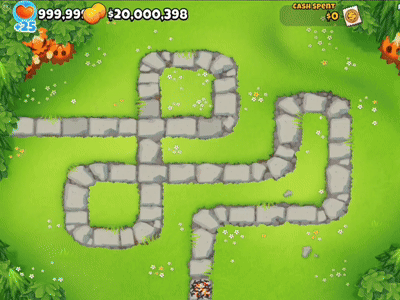

Fluxo: Ben + Banco com Miniópolis
1 Início
Construa duas Fazendas 2/0/0. Melhore uma para 2/2/0 e a outra para 2/0/2.
2 Primeiro Banco
Junte $1.100, venda a 2/0/2 e melhore a 2/2/0 para Banco (2/3/0). Enquanto o banco enche (~10 rodadas), faça novas Fazendas 2/0/0.
3 Expansão
Ao coletar $9.500, transforme as 2/0/0 em 3 ou 4 novos Bancos, e continue fazendo novas Fazendas 2/0/0.
4 Preparo da Miniópolis
Na segunda vez que os bancos encherem, venda-os (todo o dinheiro dentro dos bancos será coletado automaticamente), construa uma Vila 0/0/2. No alcance dela, faça uma segunda Vila 0/2/4 (mais barata devido ao desconto) e posicione apenas uma Fazenda 0/0/0.

5 Absorção e Liquidação
Melhore a Vila 0/0/4 para 0/0/5 para engolir a Fazenda. Em seguida, venda a primeira Vila 0/0/2 e os bancos restantes assim que encherem para financiar a defesa do Boss.